Glassblowing studio and gallery in Bellows Falls, Vermont
The beauty of nature, in glass.
Chris Sherwin hand-sculpts and blows glass animals, birds, paperweights and fruit in an old 1925 mill building in downtown Bellows Falls, overlooking the Connecticut River, from a furnace that runs on renewable energy.
Coming to Vermont? Text Chris or call ahead to set up a studio visit.
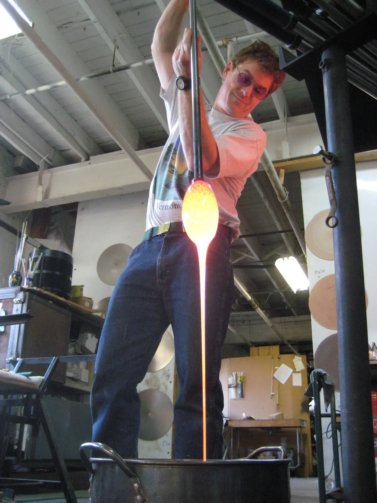
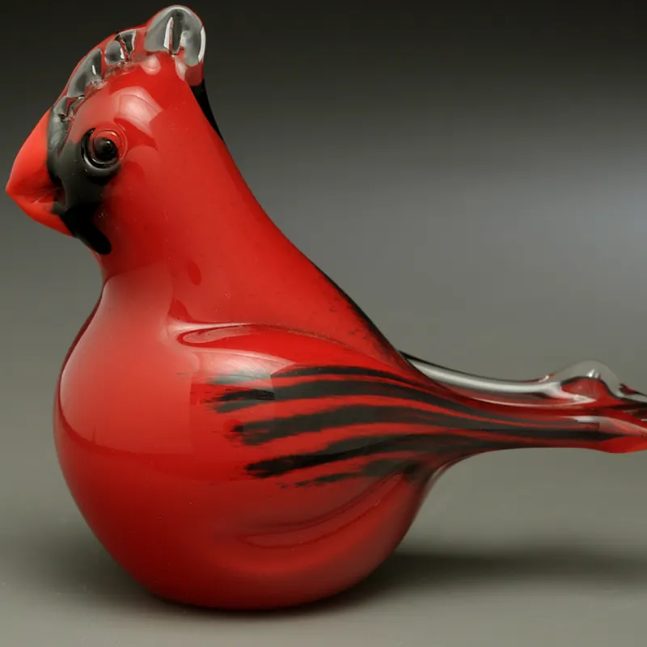
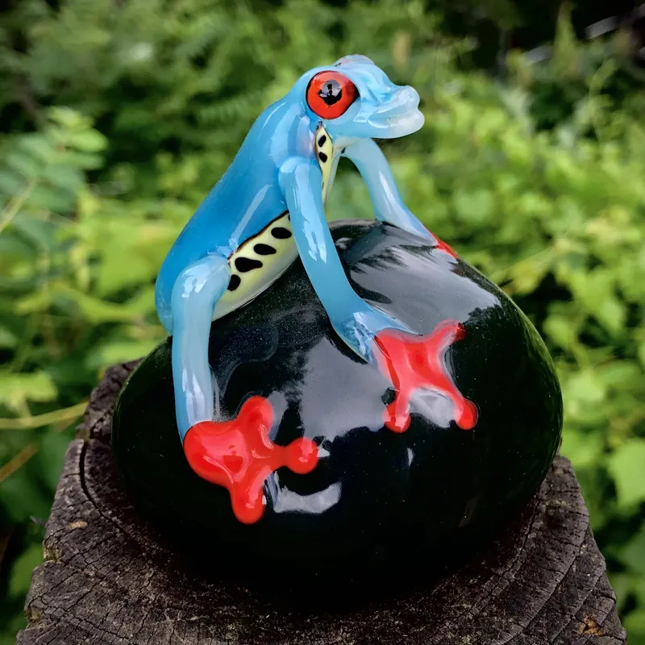
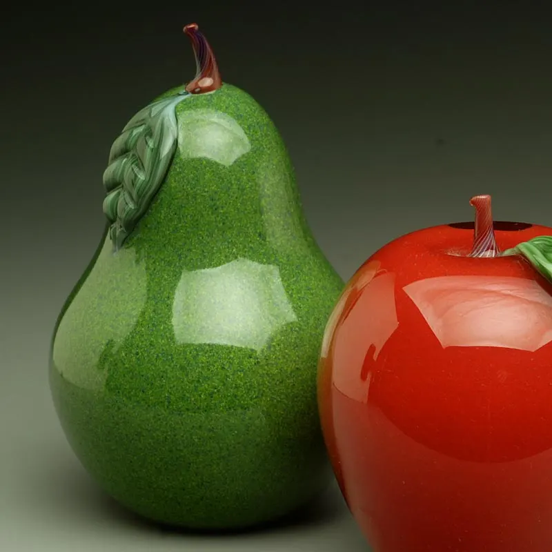
- 1925mill building on the Connecticut River
- 30+ yearsof glassmaking for Chris
- 2005Sherwin Art Glass opens in Bellows Falls
- 100 yardsto the dam whose hydro power runs the furnace
- No moldsevery piece hand-shaped, hot
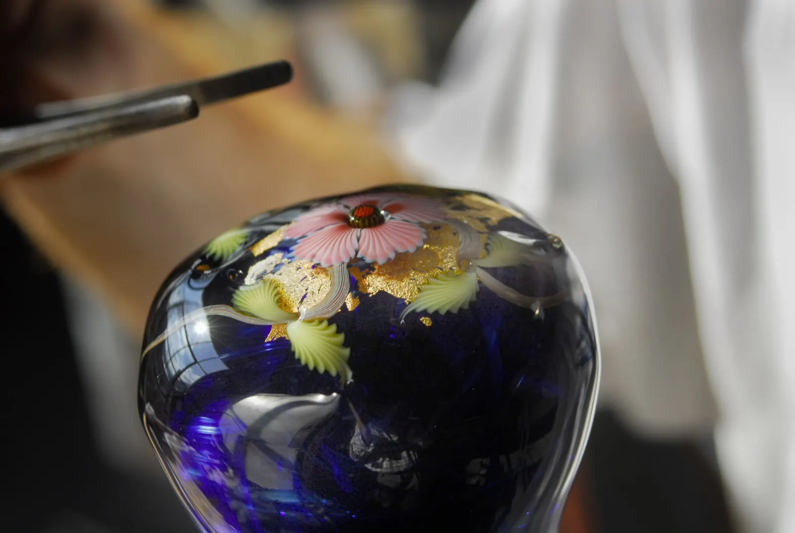
Hand-sculpted, straight from the furnace
Every piece starts as a small gather of clear, molten glass. Chris uses no molds: everything is made hot, then hand-shaped with wet newspaper, so each piece is a little different from its picture.
- Shop
Glass animal figurines
His most popular work, inspired by time spent outdoors.
- Shop
Glass bird figurines
Cardinals and other birds, sculpted by hand.
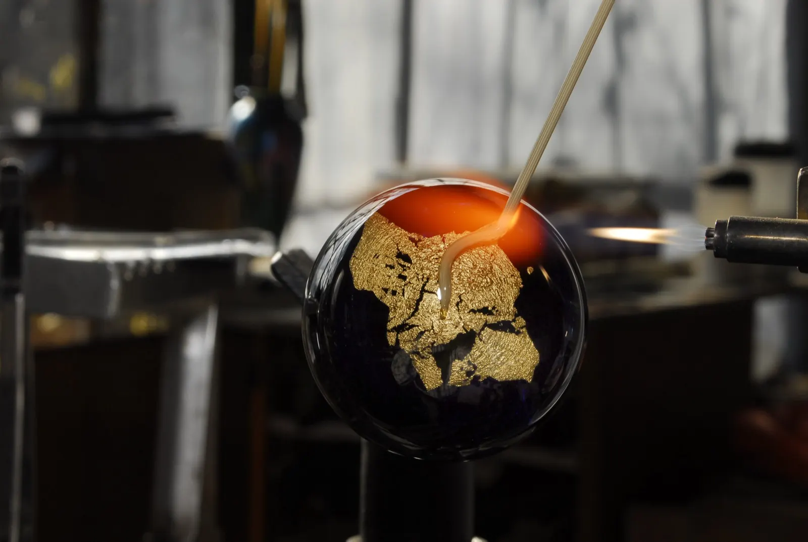
ShopArt glass paperweights
Torchwork flowers and gold leaf on deep color.
- Shop
Glass fruit sculptures
Pears in jade green, apples in bright red.
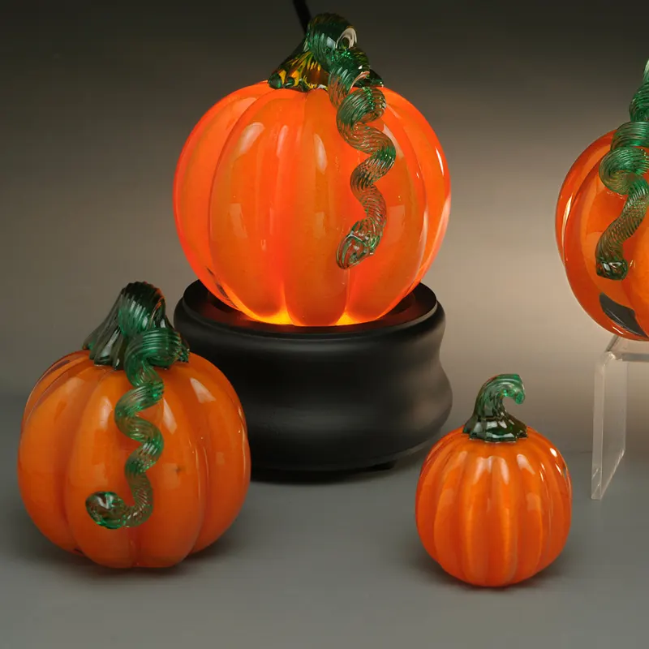
ShopPumpkins
Solid glass, in several sizes and colors. Seasonal, like his snowmen.
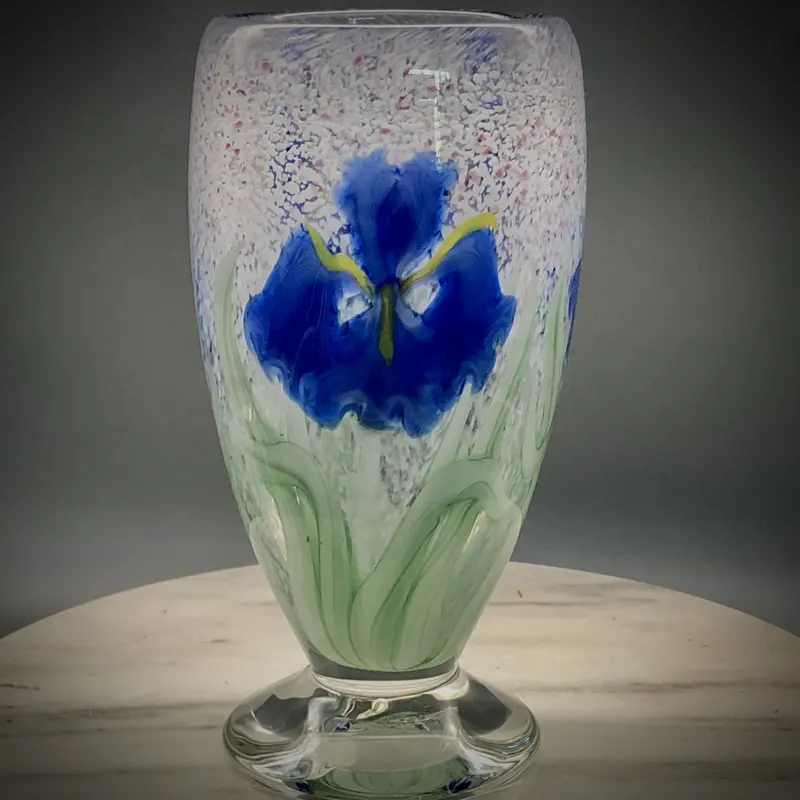
ShopGlass vases
Blue irises and leaves, applied with the torch.
Shipped with care. Each piece comes in a Kraft gift box made from recycled materials and goes out by USPS Priority Mail. If it isn't in stock, it is made to order: allow 3 to 4 weeks.
“I melt and shape the tips of the glass canes and apply them to the glass form being created. It is best described as ‘Painting with Glass.’”
Born and raised in Vermont, with glass for more than 30 years
Chris has also played music and worked in ceramics, drawing, painting and woodturning.
- 1991
The first gather
Glassblowing as an elective in his senior year at Southern Connecticut State University, New Haven.
- 1993
Simon Pearce
Hired at the Windsor and Quechee glass facility, known for high-quality functional crystal.
- 1997
Orient & Flume
Glassblower in Chico, California, at a studio known for intricate paperweights and torchwork.
- 2004
Back home
Return to New England to raise their daughter, and a year spent building the studio.
- 2005
Sherwin Art Glass
In August, a Vermont business, with its view over the Connecticut River in Bellows Falls.
A studio in a 1925 mill, above the Connecticut River
Chris works solo in downtown Bellows Falls. His furnace and all his equipment, except the torch, run on hydro power from the dam about 100 yards away: green glassblowing in the Green Mountain State.
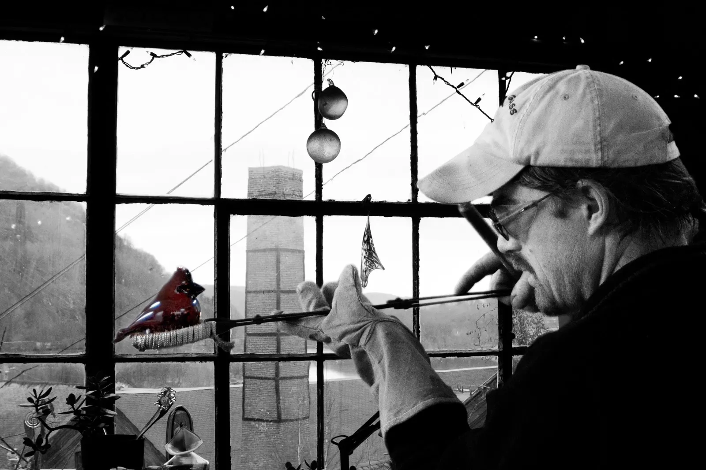
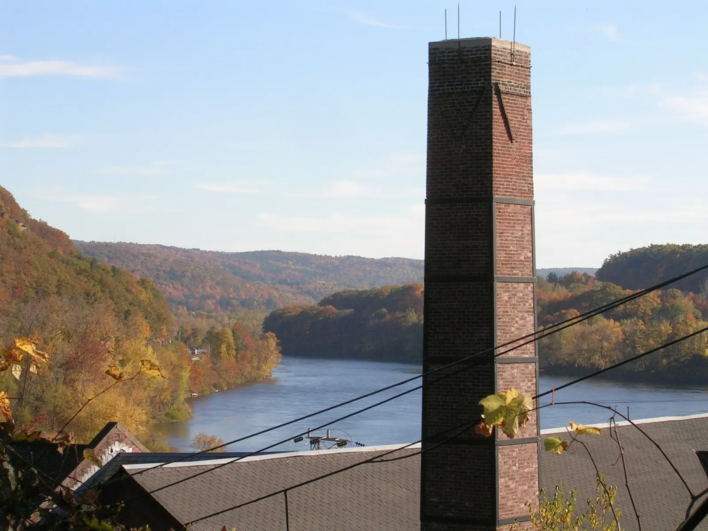
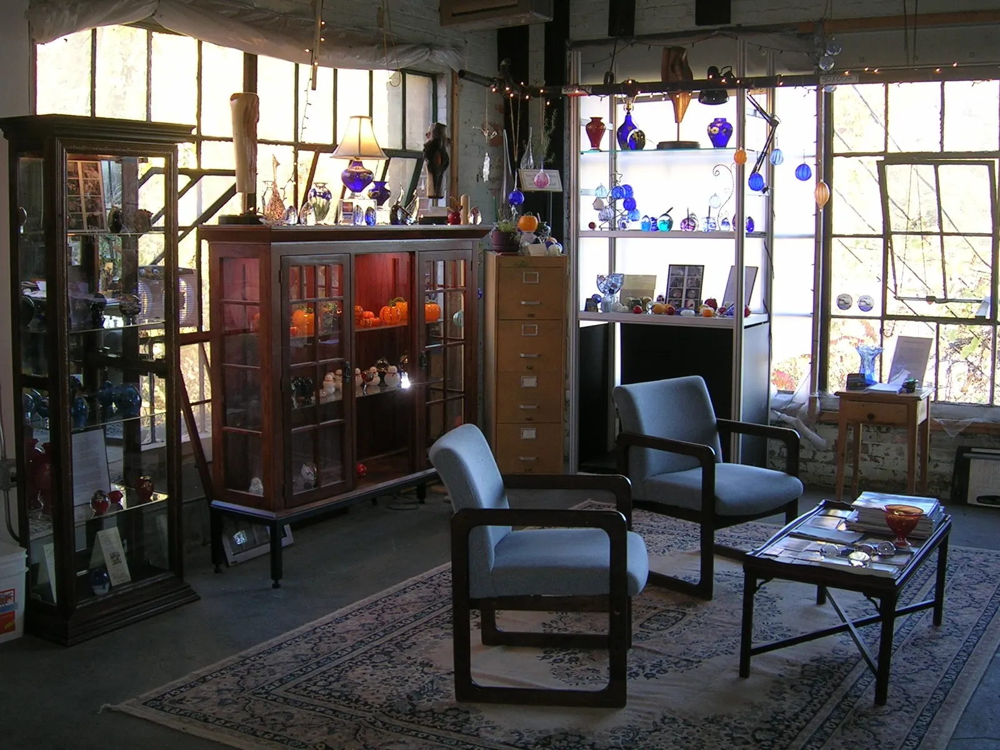
At the studio you will find a retail gallery and a viewing area, in a warm, family-friendly setting. Chris is blowing glass most weekdays and will happily show you and explain his process.
Design ideas come from the beauty he finds in nature, and from family, friends and studio visitors. His work is in the permanent collections of the New Bedford Museum of Glass and the Sandwich Glass Museum.
Coming to Vermont?
The studio is open by appointment. Call or text Chris before you come, to be sure he is at the studio that day.
- Studio
- 33 Bridge Street
Bellows Falls, VT 05101 - PO Box 168, Bellows Falls, VT 05101
- Phone
- 802-376-5744, calls and texts
- Hours
- By appointment, glassblowing most weekdays
While you're in townScenic Bellows Falls has shops, eateries and the Bellows Falls Opera House, with views up and down the river.
A cold beer after?7 Balls Brewing, Chris's nano brewery and taproom, is about 1/2 mile from the studio.
Glass memorials with ashes
Memorial pieces, which Chris calls Spirit Pieces, have become a significant part of his work, made with care for what each one means.
He works with both people and pet ashes, and only needs a small amount to complete a piece.
Examples are in the “Spirit Pieces” album on Facebook. More answers in the FAQ.